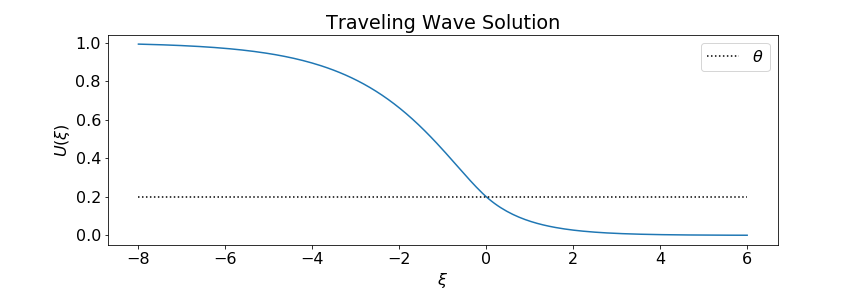
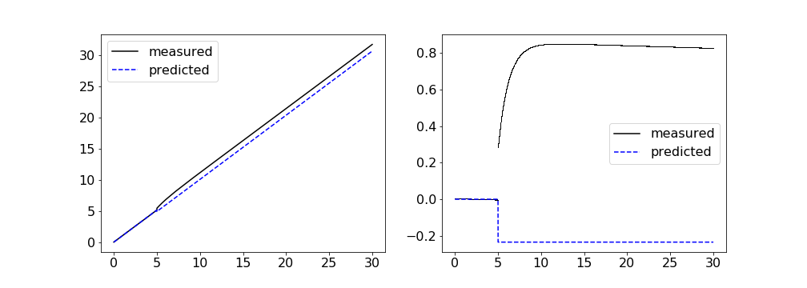

Sage Shaw - CU Boulder
Outline
Kilpatrick & Ermentrout 2012
Source: Pinto et al. 2005
One dimensional model:
$\color{gray}{\mu} \color{green}{u}_t = - \color{green}{u} + \int_\mathbb{R} \color{yellow}{w}(x,y) \cdot \color{magenta}{f}[ \color{green}{u}(y) ] \ dy$
$\mu u_t = -u + \int_{\mathbb{R}} \frac{1}{2}e^{-|x-y|}\cdot H[u(y) - \theta] \ dy$
$\mu u_t = -u + \int_{\mathbb{R}} \frac{1}{2}e^{-|x-y|}\cdot H[u(y) - \theta] \ dy + \color{green}{I(x,t)}$
$I(x,t) = 0.15 \delta(t - 1)$
Previous attempt - Hyperpolarizing Adaptation Current
Adaptive model:
\begin{align*} \color{gray}{\mu} \color{green}{u}_t &= -\color{green}{u} + \int_\mathbb{R} \color{yellow}{w}(x,y) \color{magenta}{f}\big[\color{green}{u}(y)-\color{cyan}{a}(y)\big] \ dy\\ \color{gray}{\alpha} \color{cyan}{a}_t & = -\color{cyan}{a} + \color{gray}{\gamma} \color{magenta}{f}(\color{green}{u} - \color{cyan}{a}) \end{align*}
Traveling pulse solution:
This gives us a coupled system of first order ODEs, with piecewise smooth forcing terms.
Traveling Pulse Solution
$$\begin{align*} u(x,t) = U{\left(\xi \right)} &= \begin{cases} \frac{\left(- \frac{e^{\Delta}}{\mu c - 1} + \frac{1}{\mu c - 1}\right) e^{\xi}}{2} + \frac{\left(\mu^{2} c^{2} e^{\frac{\Delta}{\mu c}} - \mu^{2} c^{2} - \frac{\mu c}{2} + \theta \left(\mu^{2} c^{2} - 1\right) + \frac{\left(\mu c - 1\right) e^{- \Delta}}{2} + \frac{1}{2}\right) e^{\frac{\xi}{\mu c}}}{\mu^{2} c^{2} - 1} & \text{for}\: \xi < - \Delta \\\left(\theta + \frac{- \mu^{2} c^{2} - \frac{\mu c}{2} + \left(\frac{\mu c}{2} - \frac{1}{2}\right) e^{- \Delta} + \frac{1}{2}}{\mu^{2} c^{2} - 1}\right) e^{\frac{\xi}{\mu c}} + 1 - \frac{e^{- \Delta} e^{- \xi}}{2 \left(\mu c + 1\right)} + \frac{e^{\xi}}{2 \left(\mu c - 1\right)} & \text{for}\: -\Delta \le \xi < 0 \\\frac{\left(1 - e^{- \Delta}\right) e^{- \xi}}{2 \left(\mu c + 1\right)} & 0 \le \xi \end{cases}\\ a(x,t) = A{\left(\xi \right)} &= \begin{cases} \gamma \left(e^{\frac{\Delta}{\alpha c}} - 1\right) e^{\frac{-\xi}{\alpha c}} & \text{for}\: \xi < - \Delta \\\gamma \left(1 - e^{\frac{-\xi}{\alpha c}}\right) & \text{for}\: - \Delta \le \xi < 0 \\0 & 0 \le \xi \end{cases}\\ \xi &= x - c t\\ e^{\Delta} &= - \frac{1}{2 \theta \left(\mu c + 1\right) - 1}, \end{align*}$$ where $c$ is given implicitly by $$\begin{align*} 0 &= - \gamma \left(1 - \left(- \frac{1}{2 \theta \left(\mu c + 1\right) - 1}\right)^{- \frac{1}{\alpha c}}\right) - \theta + 1 - \frac{1}{2 \left(\mu c + 1\right)} + \frac{2 \theta \left(- \mu c - 1\right) + 1}{2 \left(\mu c - 1\right)} + \left(- \frac{1}{2 \theta \left(\mu c + 1\right) - 1}\right)^{- \frac{1}{\mu c}} \left(\theta - \frac{\mu^{2} c^{2} + \frac{\mu c}{2} - \left(\frac{\mu c}{2} - \frac{1}{2}\right) \left(2 \theta \left(- \mu c - 1\right) + 1\right) - \frac{1}{2}}{\mu^{2} c^{2} - 1}\right). \end{align*}$$
The next steps involve linearzing the model about the traveling pulse solution. This resulted in a $\delta$ coefficient in the system of equations. We were stuck trying to solve it.
\begin{align*} \color{gray}{\mu} \color{green}{u}_t &= -\color{green}{u} + \color{yellow}{w} * \color{magenta}{f}(\color{green}{u}-a) \\ \color{gray}{\alpha} a_t & = -a + \color{gray}{\gamma} \color{magenta}{f}(\color{green}{u} - a) \end{align*}
New Attempt - Syanptic Depression
\begin{align*} \color{gray}{\mu} \color{green}{u}_t &= -\color{green}{u} + \int_\mathbb{R} \color{yellow}{w}(x,y) * q(y,t) \color{magenta}{f}\big[\color{green}{u}(y,t)\big] \ dy + \epsilon I(x,t) \\ \color{gray}{\alpha} q_t & = 1 - q - \color{gray}{\alpha}\color{cyan}{\beta} q \color{magenta}{f}(\color{green}{u}) \end{align*}
Our wave response function is given by $$\begin{align*} \nu(t) &= - \frac{\int_\mathbb{R} v_1 \int_0^t I(\xi, \tau) \ d\tau \ d\xi}{\int_\mathbb{R} \mu U' v_1 + \alpha Q' v_2 \ d\xi} \end{align*}$$ where $U, Q$ denote the traveling pulse solution, and $v_1, v_2$ satisfy $$\begin{align*} -c \mu v_1' &= v_1 -f'(U)Q \int w(y,\xi) v_1(y) \ dy + \alpha \beta Q f'(U)v_2 \\ -c \alpha v_2' &= v_2 - f(U) \int w(y, \xi) v_1(y) \ dy + \alpha \beta f(U) v_2. \end{align*}$$
I currently have an error somewhere, but I'll find it soon.
References